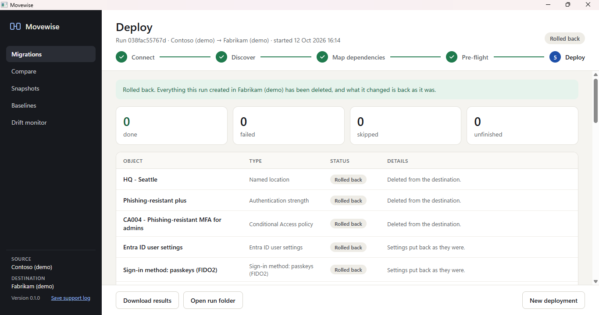

Migrate Microsoft 365 policies between tenants. Dry run first, rollback after.
Movewise is a free Windows app for tenant-to-tenant migrations. It moves Conditional Access, Intune, Defender, Exchange, Purview and Teams policies from one Microsoft 365 tenant to another, matches every group, user and app they point at, and shows you exactly what will change before anything is written.

How a tenant-to-tenant policy migration works
Policies don't break when they're copied. They break because they point at groups, users, apps and locations by ID, and those IDs don't exist in the new tenant. Movewise handles that in five steps.
- ConnectSign in to the source and the destination tenant. The source is read-only: its Graph client can only read, and its PowerShell sessions refuse anything but Get cmdlets. Choose the services to migrate.
- DiscoverEvery policy is read with what it depends on: groups, users, apps, named locations, filters, scope tags, domains, mailboxes and sites.
- Map dependenciesEach one is matched in the destination automatically (by name, email, app ID or domain), or matched, created or removed by hand. Mappings export to and import from CSV.
- Pre-flight dry runEvery policy is rewritten for the destination and checked for unmatched objects, name conflicts, missing licenses and admin roles, and removed exclusions, with a before and after view of each one.
- Deploy and roll backPolicies are created in dependency order, with progress saved after every object. A run can be resumed, and rolled back to remove only what it created.
What Movewise migrates
Policies and settings across eight Microsoft 365 services. Mailboxes, files and other user data are out of scope.
Entra ID
Conditional Access, named locations, authentication strengths, user settings, the authentication methods policy, cross-tenant access, custom admin roles.
Conditional Access migration →Intune
Settings catalog, device configuration, compliance, app protection, Autopilot profiles, assignment filters and scope tags, with assignments.
Intune migration →Defender & Exchange
Anti-phishing, anti-spam, Safe Links, Safe Attachments, quarantine, Tenant Allow/Block List, mail flow and journal rules, retention tags, and Defender for Endpoint indicators.
Defender and Exchange →Purview, Teams & SharePoint
DLP and retention policies, sensitivity labels and label policies, Teams policies with group assignments, and SharePoint and OneDrive sharing settings.
Purview and Teams →Safe by design
- The source tenant is never changed. Read-only Graph, Get-only PowerShell.
- Policies land switched off or in test mode. Conditional Access in report-only, mail flow rules in test mode, DLP in simulation, retention policies switched off.
- Rollback only undoes the run. It deletes what the run created and puts changed settings back. Nothing that was there before is deleted.
- Resumable. Progress is saved after every object, so a stop, crash or dropped connection doesn't lose the run.
- Try it without a tenant. The built-in demo uses two sample tenants that live only on your PC.

After the migration: compare, snapshots and drift

Movewise 0.2.0 keeps tenants in shape once they're migrated.
- Compare two tenants setting by setting, or a tenant with an earlier snapshot of itself.
- Snapshots save a tenant's configuration to compare with later.
- Drift monitor checks each tenant against its latest snapshot.
- Restore what was removed or changed since a snapshot, as a run you can roll back.
- Baselines save a set of policies once and apply it to other tenants.
Free and open source
Windows 10 or 11. .NET and the Exchange and Teams PowerShell modules are included. MIT licensed.